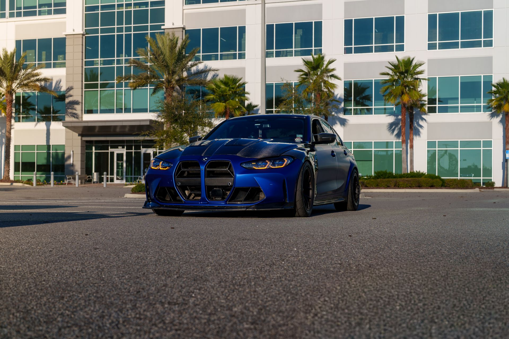
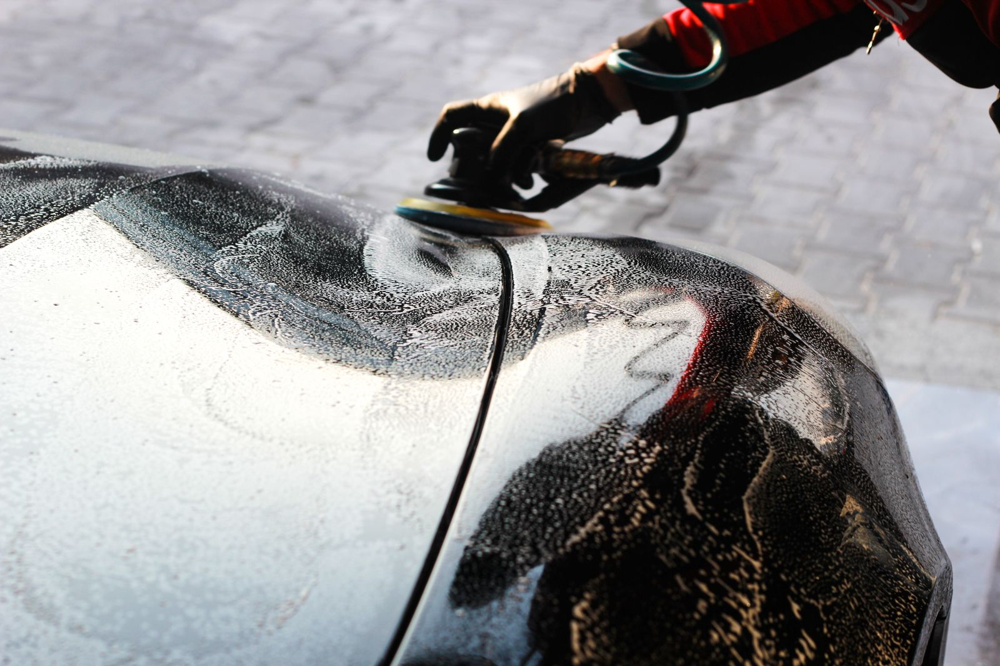
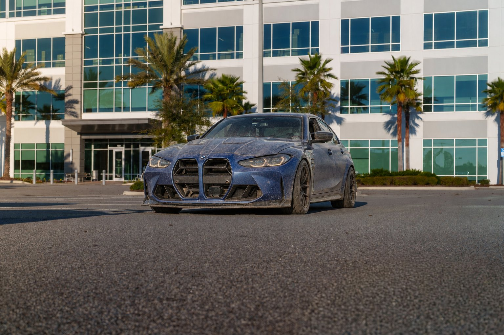

01
Polimento técnico
Correção visual e refinamento do brilho da pintura.
Estética automotiva de precisão
Estética, proteção e acabamento de alto nível em cada detalhe.
01 — Especialidades
Do acabamento da pintura ao interior, escolha o cuidado que o seu carro precisa. A recomendação final depende de uma avaliação do veículo.
Correção visual e refinamento do brilho da pintura.

Camada de proteção e acabamento para a pintura.

Limpeza cuidadosa das superfícies internas.
Limpeza externa com atenção a áreas e acabamentos.
Opções de proteção indicadas conforme uso e condição do veículo.
Tratamento visual da lente e recuperação de transparência.
Fale com a equipe para avaliar uma necessidade específica.
Consultar disponibilidade02 — Transformação
Arraste a linha ou use as setas do teclado para comparar o mesmo carro, na mesma posição, antes e depois do acabamento. A composição é demonstrativa e não representa o resultado literal de um serviço da Vértice.

Antes Depois03 — Padrão Vértice
Uma proposta de atendimento claro, cuidadoso e adequado à condição de cada veículo. Valide estes diferenciais com a operação real da Vértice antes da publicação.
A condição do veículo e o resultado desejado orientam a recomendação antes do início do trabalho.
Do preparo ao acabamento, cada superfície recebe uma abordagem compatível com o material e o serviço.
Na entrega, o cliente recebe recomendações de cuidados de acordo com o tratamento realizado.
04 — Experiências
Depoimentos demonstrativos para visualizar a página final. Substitua por avaliações autorizadas antes de publicar.
“O atendimento foi claro desde a avaliação. Explicaram o que realmente valia a pena fazer e o carro ficou com outro aspecto.”
“Gostei do cuidado com os detalhes e da organização na entrega. O interior ficou leve, limpo e muito bem finalizado.”
“A equipe foi atenciosa, cumpriu o combinado e ainda orientou sobre os cuidados depois do serviço.”
05 — Perguntas frequentes
As respostas comerciais devem ser ajustadas com as regras reais da Vértice.
A indicação ideal depende da condição da pintura, do interior e do objetivo desejado. Envie fotos pelo WhatsApp para uma avaliação inicial.
O prazo varia conforme o serviço e o estado do veículo. [Inserir prazos reais após confirmação da Vértice.]
Use qualquer botão de WhatsApp desta página para consultar disponibilidade. [Confirmar o fluxo real de agendamento.]
[Informar as formas de pagamento realmente aceitas pela Vértice.]
As orientações variam conforme o tratamento aplicado. A equipe deve explicar os cuidados específicos na entrega do veículo.
06 — Encontre a Vértice
Substitua endereço, telefone e perfil pelos dados oficiais da Vértice antes de publicar.
Centro · Sua cidade — UF
Atendimento com agendamento08h às 18h
Sábado · 08h às 13hNovidades, processos e resultados.